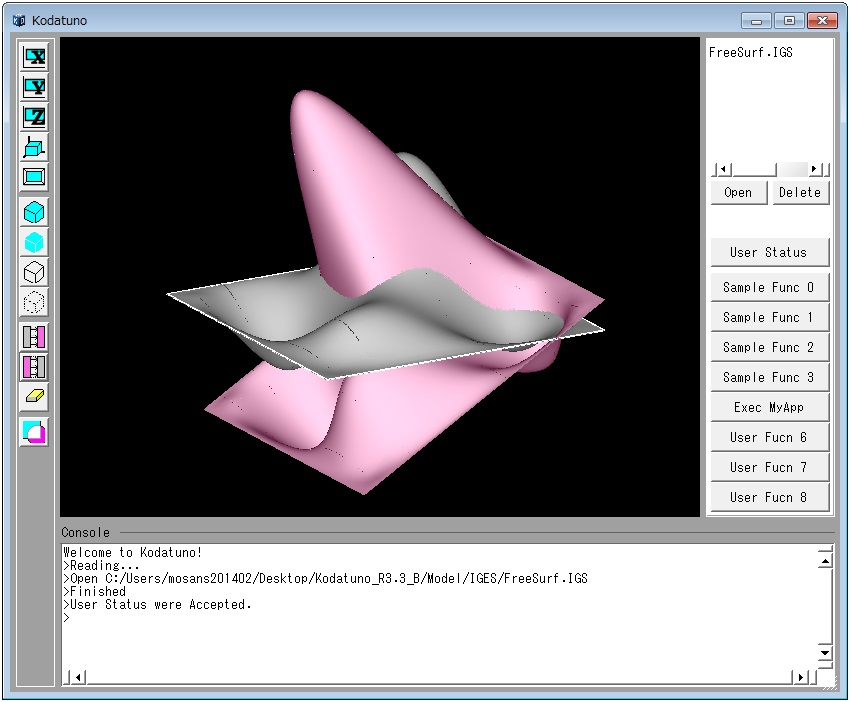
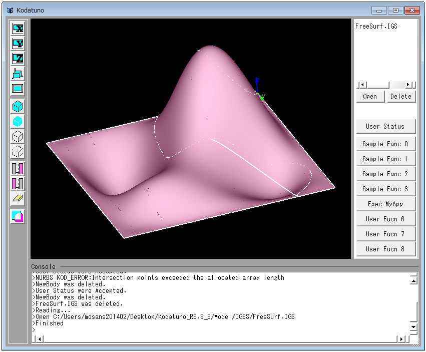

- まず、UserFunc.cpp内のUSERクラスのコンストラクタに，ユーザーボタンの5番目を押すと実行される関数を登録しましょう．USER::USER()を以下のように変更します。
// コンストラクタ
USER::USER()
{
// ここでUserFunc関数ポインタの指す関数を指定する
for(int i=0;i< USERFUNCNUMMAX;i++){
if(i==0)
UserFunc[i] = &USER::ExecSampleFunc0; // サンプル
else if(i==1)
UserFunc[i] = &USER::ExecSampleFunc1; // サンプル
else if(i==2)
UserFunc[i] = &USER::ExecSampleFunc2; // サンプル
else if(i==3)
UserFunc[i] = &USER::ExecSampleFunc3; // サンプル
else if(i==4)
UserFunc[i] = &USER::ExecMyApp; // 練習課題
else if(i==5)
UserFunc[i] = &USER::MasterUserFunc; // 未使用のUserFunc[i]にはMasterUserFunc()を登録しておく
else if(i==6)
UserFunc[i] = &USER::MasterUserFunc; // 未使用のUserFunc[i]にはMasterUserFunc()を登録しておく
else if(i==7)
UserFunc[i] = &USER::MasterUserFunc; // 未使用のUserFunc[i]にはMasterUserFunc()を登録しておく
else
UserFunc[i] = &USER::MasterUserFunc; // 未使用のUserFunc[i]にはMasterUserFunc()を登録しておく
}
// Userステータスの初期化
UserStat.Mode = 0;
for(int i=0;i< USERPROPNUM;i++)
UserStat.Prop[i] = 0;
}
- 次に、UserFunc.hにExecMyApp()をプロトタイプ宣言します。
///////////新たにUser関数等を登録する場合は以下にprivate:で記述////////////////////////////////////////
private:
int ExecSampleFunc0(BODYList *,OBJECTList *,int); // サンプル
int ExecSampleFunc1(BODYList *,OBJECTList *,int); // サンプル
int ExecSampleFunc2(BODYList *,OBJECTList *,int); // サンプル
int ExecSampleFunc3(BODYList *,OBJECTList *,int); // サンプル
int ExecMyApp(BODYList *,OBJECTList *,int); //練習課題
};
- また，ユーザーボタン名も変更しましょう．変更するには，"UserFunc.cpp"のUSER::SetMenuLabelName()を変更します．
// Userメニュー名を登録(Userボタンの表示名)
void USER::SetMenuLabelName()
{
// 独自のメニュー名をここに記述してください
strcpy(MenuLabel1,"Sample Func 0");
strcpy(MenuLabel2,"Sample Func 1");
strcpy(MenuLabel3,"Sample Func 2");
strcpy(MenuLabel4,"Sample Func 3");
strcpy(MenuLabel5,"Exec MyApp");
strcpy(MenuLabel6,"User Func 6");
strcpy(MenuLabel7,"User Func 7");
strcpy(MenuLabel8,"User Func 8");
}
- UserFunc.cppの適当な位置にExecMyAppの実体を記述します。ExeSampleFunc1()を参考にして，"User Status"がMode1のときに実行されるようにしましょう．
実行される関数名は何でもかまいませんが，ここではMyAppMain()としました．
// 練習課題
int USER::ExecMyApp(BODYList *BodyList, OBJECTList *ObjList, int PickCount)
{
// Mode1選択時のみMyAppMain（）を実行
if (UserStat.Mode == 0){
MyAppMain(BodyList,ObjList,PickCount,UserStat.Prop);
return KOD_TRUE;
}
return KOD_FALSE;
}
MyAppMain()に渡す引数は，BODYList, OBJECTList, PickCount, UserStat.Propの4つが必要になります．
- BODYList *BodyList
- OBJECTList *ObjList
- int PickCount
- double Prop[ ]
とします。
- MyAppMain()のプロトタイプ宣言を"SampleFunc.h"に記述します．
- 次にいよいよ，MyAppMain()の実体を書いていきます．今回は"SampleFunc2.cpp"に書いていきましょう．
// 練習課題
int MyAppMain(BODYList *BodyList,OBJECTList *ObjList, int PickCount, double Prop[])
{
if(!PickCount) return KOD_ERR; // セレクションされていなかったら、何もしない
NURBS_Func nfunc;
double green[3] = {0,1,0};
OBJECT *obj = (OBJECT *)ObjList->getData(0); // 一番最初にセレクションされたエンティティの情報を得る
BODY *body = (BODY *)BodyList->getData(obj->Body); // 一番最初にセレクションされたBODYの実体を得る
if(obj->Type != _TRIMMED_SURFACE) return KOD_ERR; // セレクションされた曲面がトリム面でない場合は終了
NURBSS *S = body->TrmS[obj->Num].pts; // BODYからNURBS曲面を取り出す
NURBSS *S_ = new NURBSS; // アフィン変換を施したNURBS曲面を格納するために新たなNURBSSをS_として宣言，メモリー確保
nfunc.GenNurbsS(S_,*S); // 変換前のNURBS曲面SをS_にコピー
Coord ratio = SetCoord(1,1,Prop[0]); // Prop[0]をz方向の倍率として取り出す
double deg = Prop[1]; // Prop[1]を回転角度として取り出す
Coord shift = SetCoord(0,0,Prop[2]); // Prop[2]をz方向の移動量として取り出す
double feed = Prop[3]; // Prop[3]は交点群算出時の点間隔
nfunc.ChRatioNurbsS(S_,ratio); // S_をz方向にratio倍する.
nfunc.RotNurbsS(S_,SetCoord(0,1,0),deg); // S_をy軸周りにdeg度回転
nfunc.ShiftNurbsS(S_,shift); // S_をsiftシフト
Describe_BODY desc; // 新たなNURBS曲面を描画するときは，Describe_BODYクラスを使う
desc.DrawNurbsSurfe(*S_); // S_を描画
return KOD_TRUE;
}
上のソースには，説明しやすいように1から順番に行番号が振ってあります．
この課題では，前例題にはない，NURBS曲面をコピーするということを行います．NURBS曲面をコピーするには，まず，コピーするための新たな箱を用意します(15行目)．
次に，NURBS_Func::GenNurbsS()関数を用いてコピーを実行します(16行目)．
18〜21行目では，"User Status"のプロパティ値を取得しています．今回は，倍率，回転角度，シフト量，交点間隔の4つを入力する仕様でしたので，Prop[0]〜[3]まで
を得るようにしました．
23行目からは実際にコピーした曲面のアフィン変換を実施しています．ここは2.6.2 NURBS曲面のアフィン変換の例題を参考にしてください．
ユーザー定義関数内で新たに作成したNURBS曲線や曲面をグラフィック描画領域に描画するためには，27, 28行目の操作が必要になります．27行目では，Describe_BODYと呼ばれる
BODY描画を担当するクラスを呼び出しています．28行目では，このクラスに属するDescribe_BODY::DrawNurbsSurf()関数を呼び出し，描画命令を実行しています．
とりあえずここまで書き終えたら，一度このプログラムを実行してみましょう．これまでのプログラムの変更を全て保存し、2.2 Kodatunoを動かしてみよう に沿って
コンパイル、実行してください。次に、"FreeSurf.IGS"を読み込み、選択状態にします。"User Stat"を開き、Modeを1にセット、Prop1〜3までに適当な値を入れ、
"CalcIntersecLine"ボタンを押します。下図は、Prop1=2, Prop2=30, Prop3=10とした場合の結果です。

新たに生成したNURBS曲面が表示されたと思います．しかし，試していただければ分かるようにピックすることはできません．これは，新たに生成したNURBS曲面をBODYListに新たな
Bodyとして登録していないためです．言い換えれば，現時点ではただ表示しているだけということになります．
そこで、新たに作成したNURBS曲面を新たなBodyとして登録してみましょう。新たに登録する場合は、
BODYクラスのRegistNurbsStoBody()関数を用います。このとき、この関数の引数として、登録するBODYListへのポインタ, 新たなBody, Body名の3つが必要になります．
nfunc.ChRatioNurbsS(S_,ratio); // S_をz方向にratio倍する.
nfunc.RotNurbsS(S_,SetCoord(0,1,0),deg); // S_をy軸周りにdeg度回転
nfunc.ShiftNurbsS(S_,shift); // S_をsiftシフト
BODY *newbody = new BODY; // 生成したNURBS曲面を格納するための新たなBodyを用意
newbody->RegistNurbsStoBody(BodyList,*S_,"NewBody");// 1枚のNURBS曲面を新たなBodyとして登録する
return KOD_TRUE;
}
ここで，Describe_BDOY::DrawNurbsSurf()が消えていることに注意してください．生成したNURBS曲面をBodyとしてリストに登録すると，Kodatuno内部で描画対象として
認識してくれますので，わざわざ描画指令を送る必要がなくなります．さらに，リスト登録することによって，ピックが可能になります．
BODY *newbody = new BODY; // 生成したNURBS曲面を格納するための新たなBodyを用意
newbody->RegistNurbsStoBody(BodyList,*S_,"NewBody");// 1枚のNURBS曲面を新たなBodyとして登録する
Coord R[1000], R_[1000],Cod[1000];
int PtNum = nfunc.CalcIntersecPtsNurbsSSearch(S,S_,10,feed,R,R_,1000); // NURBS曲面同士の交点群を算出
nfunc.CalcNurbsSCoords(S,PtNum,R,Cod);
DrawPoints(Cod,PtNum,1,3,green);
return KOD_TRUE;
}
- 交点群が正しく描画されたら，最後に得られた交点群からNURBS曲線を生成してみましょう．
BODY *newbody = new BODY; // 生成したNURBS曲面を格納するための新たなBodyを用意
newbody->RegistNurbsStoBody(BodyList,*S_,"NewBody");// 1枚のNURBS曲面を新たなBodyとして登録する
Coord R[1000], R_[1000],Cod[1000];
int PtNum = nfunc.CalcIntersecPtsNurbsSSearch(S,S_,10,feed,R,R_,1000); // NURBS曲面同士の交点群を算出
nfunc.CalcNurbsSCoords(S,PtNum,R,Cod);
NURBSC C;
nfunc.GenInterpolatedNurbsC1(&C,Cod,PtNum,4); // 指定した点群を通る4階のNURBS曲線を生成する
Describe_BODY desc;
desc.DrawNurbsCurve(C); // NURBS曲線の描画
return KOD_TRUE;
}

交線の表示が部分的におかしいのは, 交点配列がきれいにソートされていないからです．CalcIntersecPtsNurbsSSearch()関数などを用いて交点群を生成する場合は，
かならずしも，順序正しく点が格納されていないため，何らかのソート用コードを記述しなければなりません．
以上で、簡単なアプリケーション作成手順の説明を終わります。